Let's have a look at the best exercises for targeting your upper chest, and how you can put together an upper chest workout.
1. Incline Bench Press
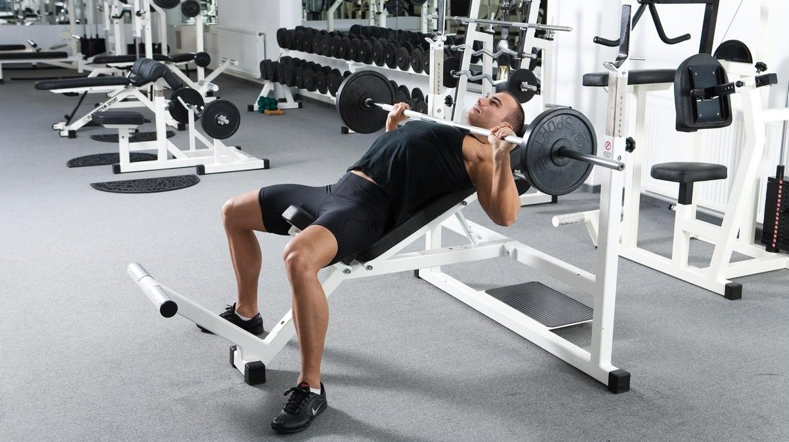
The incline bench press is one of the best exercises for your upper chest.
Because of the incline, your upper pec muscle fibers are directly in the line of work,
emphasizing this part of the muscle compared to the flat bench press.
How to Do the Incline Bench Press
1. Sit on an inclined bench, unrack a barbell and hold it on straight arms above your shoulders.
2. Inhale and lower the bar down to your chest.
3. Press the bar up to straight arms while exhaling.
2. Incline Dumbbell Press
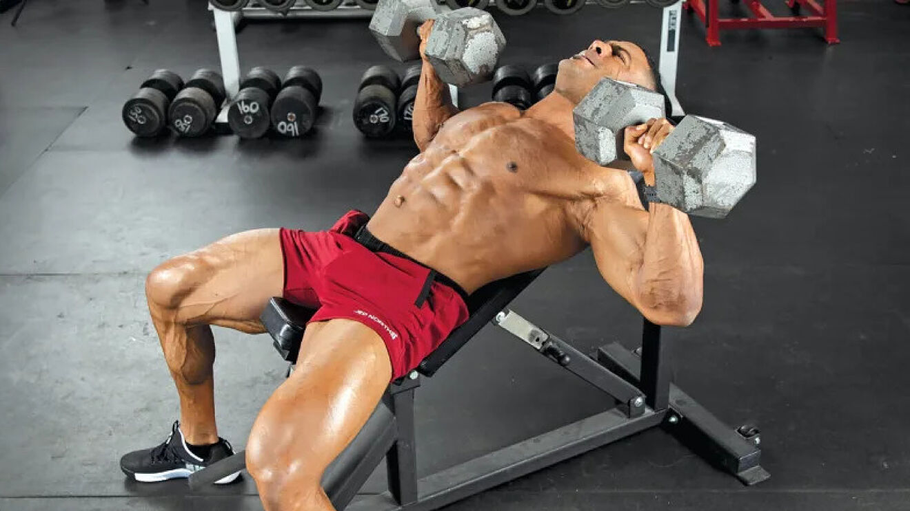
The incline dumbbell press is similar to the incline barbell press,
with the sole difference that you use a pair of dumbells instead of a barbell.
This allows a more free range of motion, as your hands are no longer restricted by the barbell.
How to Do the Incline Dumbbell Press
1. Sit on a bench, and lift a pair of dumbbells up to the starting position.
2. Press the dumbbells up to straight arms, while exhaling.
3. Inhale at the top, or while lowering the dumbbells with control back to your shoulders.
3. Decline Push-Up
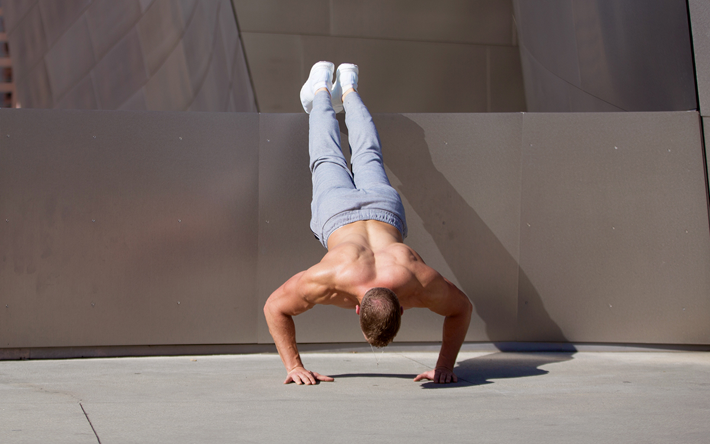
The decline push-up is a variation of the regular push-up,
in which you’ve placed your feet on an elevation.
This makes the exercise heavier and shifts more of the work towards your upper chest.
How to Do Decline Push-Ups
1. Assume the starting position by placing your feet on a low bench or box, and your hands on the floor. Keep your hands slightly wider than shoulder-width apart.
2. Try to form a straight line from head to feet, and brace your abdomen slightly.
3. Lower yourself as deep as you can, while inhaling.
4. Reverse the motion and push yourself up to straight arms again while exhaling.
4. Low to High Cable Chest Fly
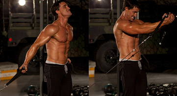
The cable chest fly is an isolation exercise for your pecs,
and when you set the pulleys low and pull the handles in an upward motion,
they target your upper chest with constant tension.
This exercise is also known as the cable crossover.
How to Do the Low to High Cable Chest Fly
1. Fasten a pair of handles in a low position of a cable cross. Grip the handles, step forward, and lean slightly forward.
2. With just a slight bend in the arms, push the handles forward until they meet in front of your chest.
3. With control, let the handles go back to the starting position.
Middle Chest Exercises
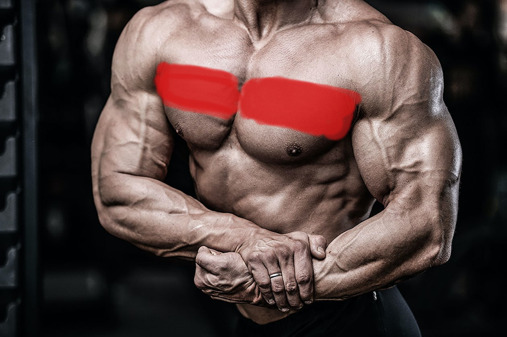
Let's have a look at the best exercises for targeting your middle chest, and how you can put together an middle chest workout.
1. CLOSE GRIP PUSH-UP
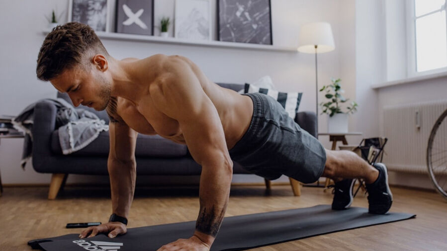
The push-up tops this list because it is the foundation of chest development.
And the close grip is the best push-up for the inner chest.
While it won’t give you anywhere near the gains of free weights,
it will teach you perfect form, provides a solid base,
and can be done anywhere. You may be surprised how many push-ups you can’t do.
How to do close grip push ups:
1. Assume the push up position, but bring your hands together about 2” apart; you can drop your knees to the ground for support or to rest.
2. Keep your back straight and lower your chest a few inches above your hands.
3. Push your chest back up to the starting position by contracting the inner chest and triceps.
2. BENCH PRESS
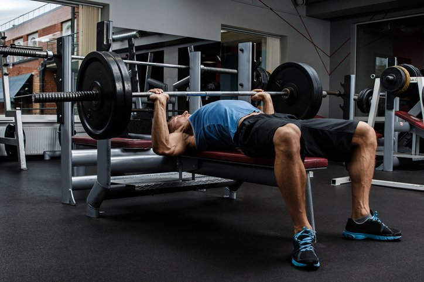
The bench press is the ideal free-weight exercise for overall chest development.
It acts heavily on the sternal head, which is what we want for the inner chest.
While the bench press doesn’t act directly on the inner chest,
it develops the strength that supports the exercises that do.
You can also include this move in a home chest workout by switching to dumbbells and using the floor in place of a bench.
how to do bench presses:
Lie on your back on a flat bench and grab the bar with your hands slightly more than shoulder width apart, palms forward and thumb wrapped around the bar.
Unrack the bar and slowly lower the it about 3-4 inches from middle of your chest; do not let the bar touch your chest.
Contract your chest to push the bar back to the start position.
Repeat and rerack at the end of the set.
3. CABLE FLY
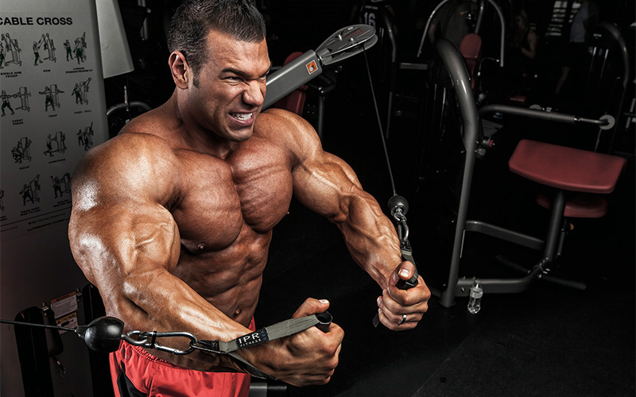
Flys are the best exercises for really focusing tension on the inner chest.
Cable exercises provide constant tension,
meaning the muscle stays stimulated throughout the entire range of motion.
Finally, through the cable machine you can explore a variety of exercises that may add value to your routine.
how to do cable flys:
Set up: Select the weight and adjust the cable handles slightly lower than shoulder width. Stand in the middle of the rack and step forward so your arms are pulled back, but bent forward slightly at the elbow.
Start by pressing your arms together, maintaining the bend. It’s important to really focus on squeezing the inside of the pecs.
Stop when your hands meet in front of you but maintain tension on the pecs.
Slowly return your arms to your sides; you’ll still feel a bit of a stretch while resting between reps.
4. DUMBBELL FLY
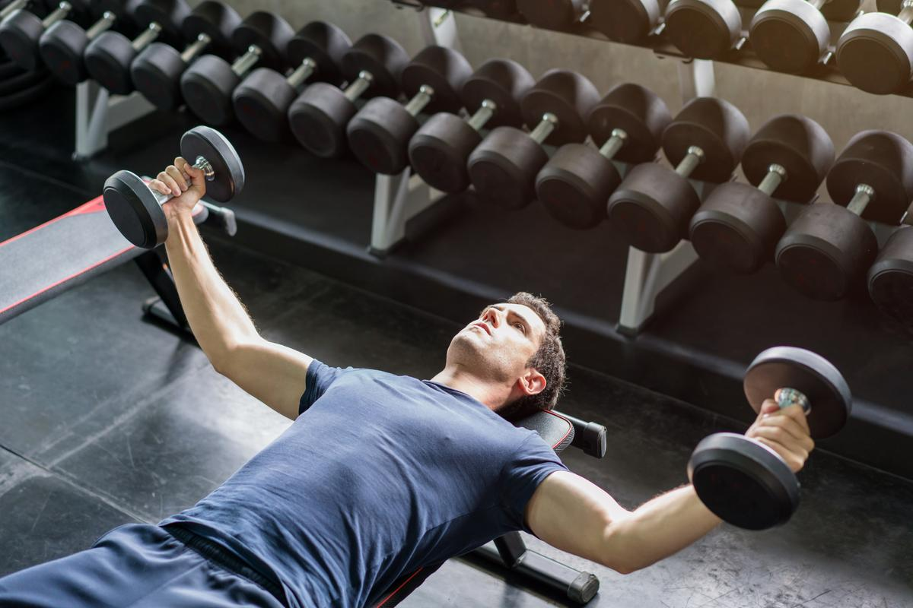
Another foundational exercise - everyone should know how to perform the dumbbell fly.
The dumbbell fly takes advantage of arm rotation to really hit the inner chest.
Keep in mind you’ll be working against gravity with this one.
You'll find this move included in our back and chest workout as it provides some serious pec gains!
how to do dumbbell flys:
Find a good position on the bench with your feet planted and shoulders engaged with the bench and lie back with weights held against your chest.
Extend your arms outward with elbows pointing downward and lower arms angled slightly up toward the sky.
Maintain this position and push the arms together above the chest in a wide arc.
Peak tension is at the top of the lift as the weights come together so be sure to maintain tension throughout.
Lower the weights back toward the ground; stop when the elbows are just slightly lower than the bench.
5. CLOSE GRIP BENCH PRESS
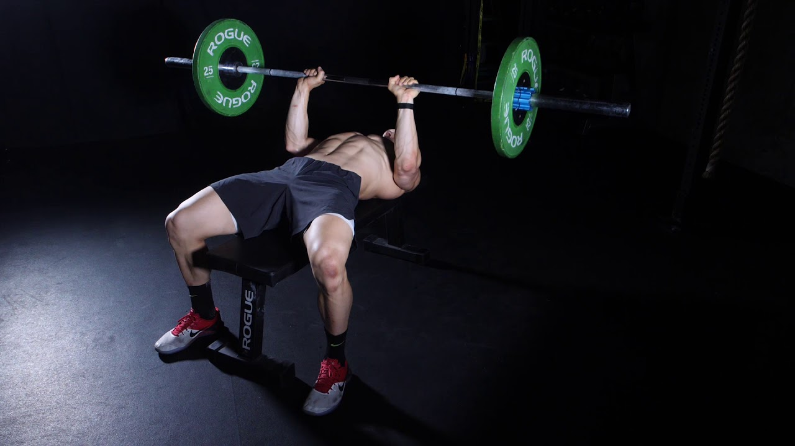
The close grip bench press is another foundational movement that does work to the inner chest,as well as the triceps.
This is a good place to start if you struggle with other exercises, or only have a barbell.
Remember to decrease the weight for this, probably 30% than your normal flat bench weight
how to do close grip bench press
Similar to a flat bench, lie on your back under the bar and grab the bar with a neutral grip.
The difference: bring your hands together on the bar, about 6” apart, or just above and outside the nipples.
Unrack the bar and slowly lower it toward your chest until your hands are just a couple inches above your chest; keep your elbow to your sides and pointing forward about 45-70 degrees.
Push the bar back up until your arms fully extend; concentrate on keeping tension on your inner chest.
Repeat.
Lower Chest Exercises
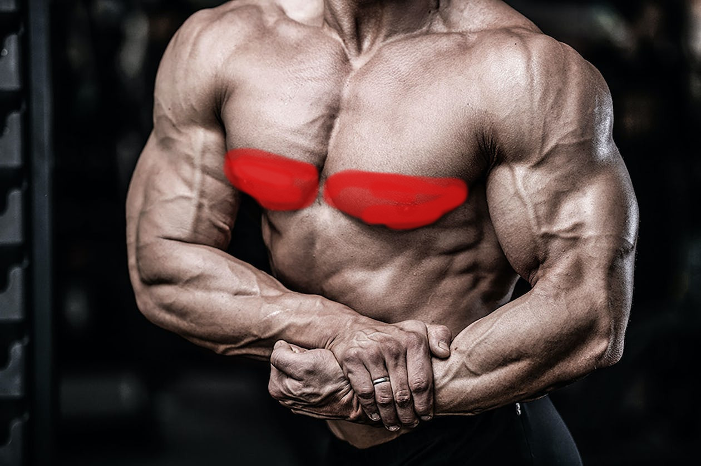
Let's have a look at the best exercises for targeting your middle chest, and how you can put together an middle chest workout.
1. Incline pushup
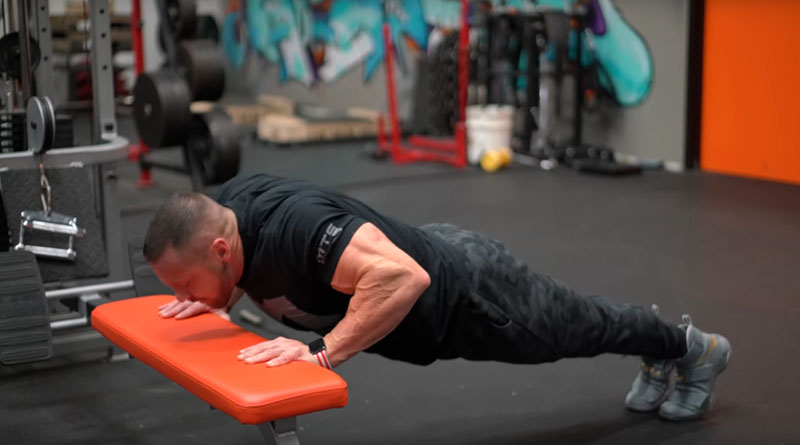
Pushups are a great multifunctional exercise because they work the entire upper body and back.
Performing pushups at an incline will put more focus on the lower chest.
how to do the incline pushups
Stand in front of the bench. Place the hands shoulder-width apart on the edge of the bench.
Adopt a plank position by extending the legs backward until the legs and back form a straight line. Keep the weight on the balls of the feet.
Slowly bend the arms to lower the chest toward the bench. Remember to keep the elbows and arms close to the body.
Slowly push the body away from the bench, extending the arms but maintaining a slight bend in the elbow.
2. Cable crossover
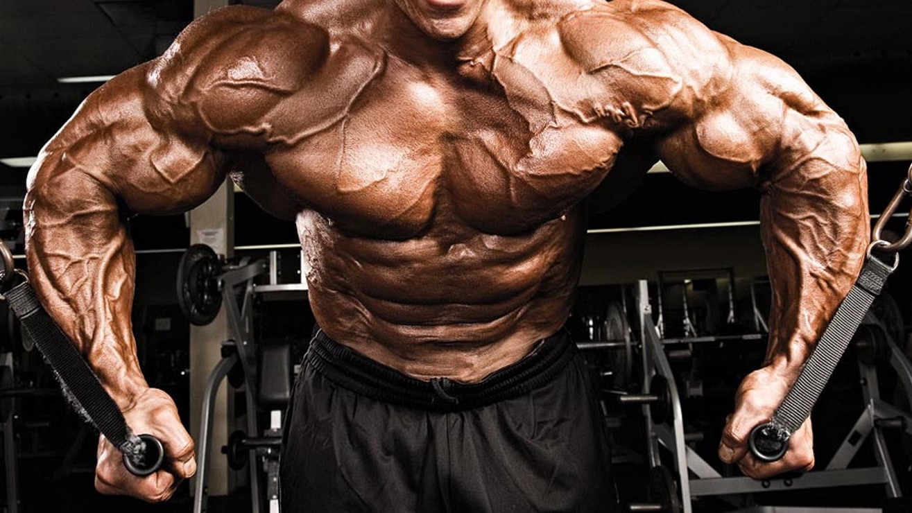
Cable machines offer a wide range of exercise options depending on the position of the pulleys.
Setting the pulleys higher will put more emphasis on the lower chest while setting them lower emphasizes the upper chest.
how to do the cable crossovers
Position the pulleys above the head. Attach one handle to each pulley and then select the desired weight.
Take one handle in each hand with the palms facing down. Stand in the middle of the cable machine and take a few steps forward to put a little tension on the cables.
Step one foot forward.
Lean forward.
Extend the arms out to the side but keep a slight bend in the elbows. Do not let the elbows move behind the shoulders.
On the exhale, bring the hands together in front of the body.
Return to the starting position by slowly extending the arms and inhaling.
3. Parallel-bar dips
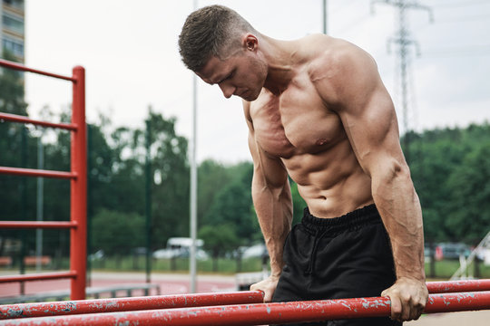
Parallel-bar dips activate multiple muscle groups in the chest, arms, shoulders, and back.
During this exercise, remember to lean slightly forward on the dip to engage the muscles in the lower chest.
how to do the Parallel-bar dips
Grip the bars, using the arms to push the body up above them.
Slowly inhale while bending the arms and leaning the torso forward. Continue lowering the body until there is a slight stretching sensation in the chest.
On the exhale, lift the body back up above the bars.
Repeat as many reps as possible without overexerting the muscles.